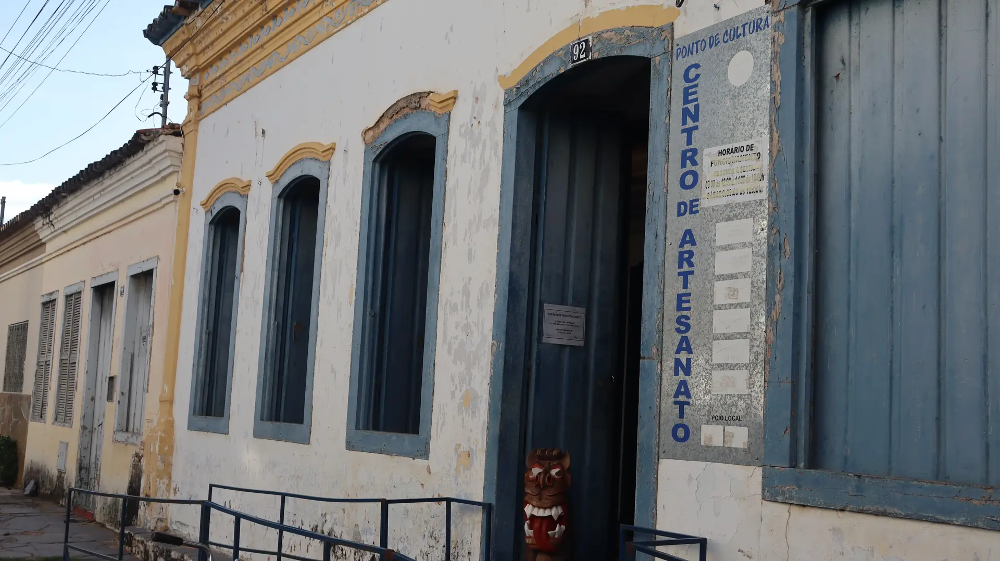

Sobre o local
O Centro de Artesanato de Januária é um espaço dedicado à valorização da cultura, das tradições e dos saberes populares da região. Instalado em um casarão de 1879, na Rua da Cultura, o local reúne e comercializa peças produzidas por artesãos locais em madeira, cerâmica, tecidos e fibras naturais.
Como Ponto de Cultura, promove oficinas de bordado, produção de carrancas, capoeira, cerâmica e instrumentos musicais, além de sessões de cinema, teatro, apresentações musicais, saraus e festivais. O espaço conta ainda com uma biblioteca comunitária, a Sala Xakriabá, dedicada ao artesanato do povo indígena local, e uma venda sertaneja, com produtos e sabores da região, como cachaças, doces caseiros e quitutes típicos do Cerrado.
Gerido pela Associação de Amigos da Cultura da Região de Januária, o Centro de Artesanato contribui para a preservação da cultura barranqueira sanfranciscana e para o fortalecimento da economia solidária e da produção cultural local.
Informações sobre o local
Endereço: Rua Visconde de Ouro Preto, 92, Centro – Januária/MG.
Horário de funcionamento: De terça a sábado, das 09h às 12h e das 16h às 20h.
Tipo de visita: Visita livre
Contato: WhatsApp: (38) 99886-6286
Site: centrodeartesanatojanuaria.my.canva.site
Instagram: @centrodeartesanatojanu
Formas de pagamento: Não há cobrança para acesso
Pet-friendly: (ENTRAR EM CONTATO E PERGUNTAR)
Galeria de fotos


Conheça em vídeo do Canal Sertões Gerais
*Produção externa e independente do GuiaJanu.